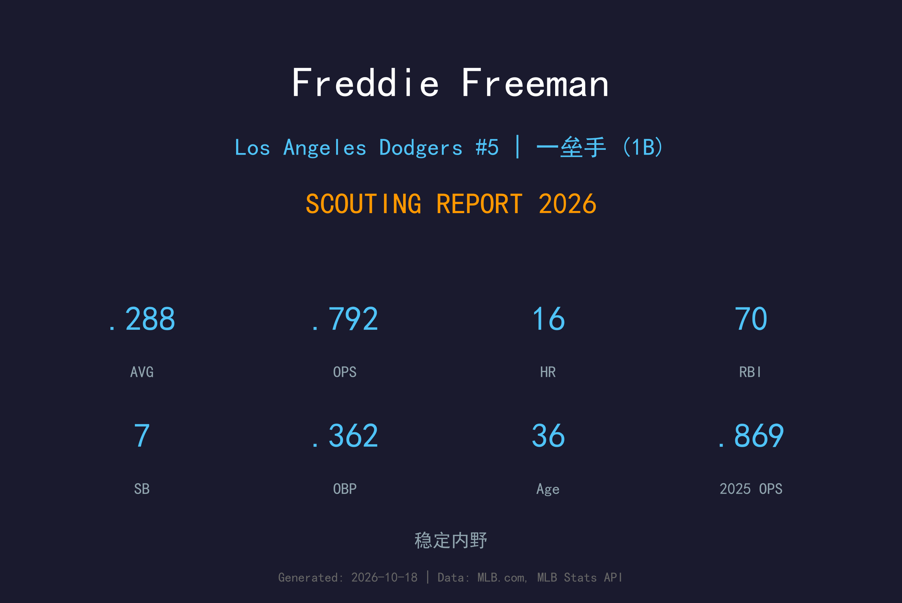
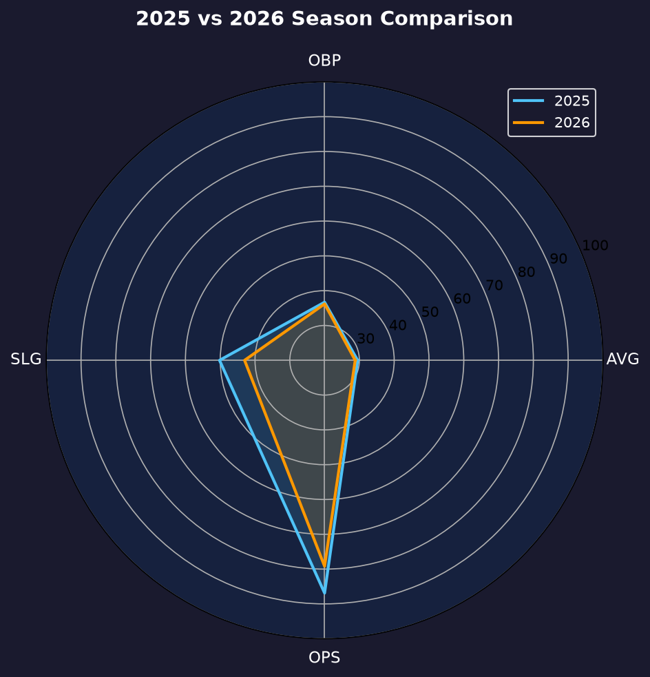
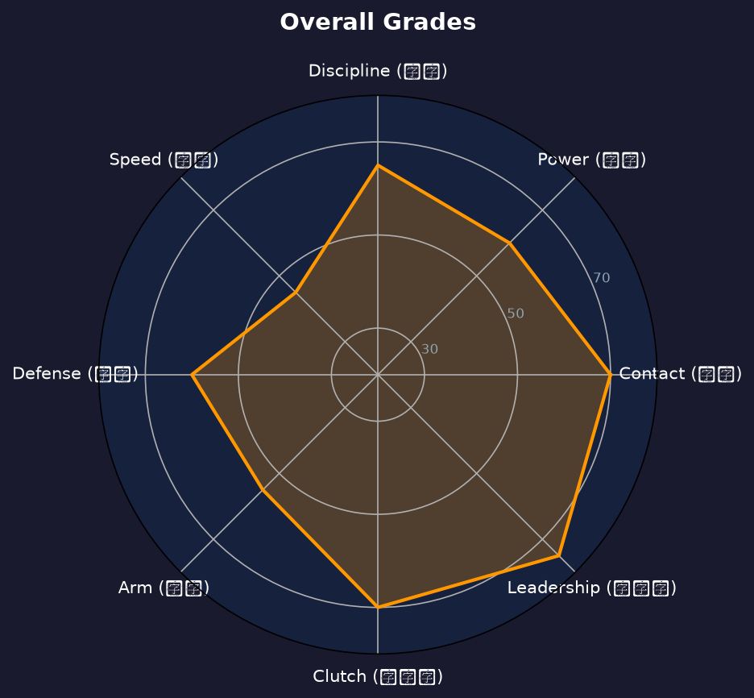

Los Angeles Dodgers #5 | First Base | L/R

Freddie Freeman 是现代棒球最稳定的一垒手之一，以卓越的打击能力和出色的选球眼闻名。2020年国联MVP，6次入选全明星，2021年带领勇士队夺得世界大赛冠军。
2022年加盟道奇队后，Freeman 延续了顶级表现。2026完整赛季他出赛153场，缴出.288/.362/.430、16轰70打点的成绩，仍是道奇打线最可靠的中流砥柱。
Freeman 以其出色的plate discipline著称，每年保送数都位居联盟前列。他的一垒防守也属上乘，是道奇队内野防守的重要一环。

| 赛季 | G | AVG | OBP | SLG | OPS | HR | RBI | BB | SO |
|---|---|---|---|---|---|---|---|---|---|
| 2025 | 147 | .295 | .367 | .502 | .869 | 24 | 90 | 60 | 128 |
| 2026 | 153 | .288 | .362 | .430 | .792 | 16 | 70 | 66 | 116 |

全明星级别一垒手，道奇队打线核心
A- 级 / 明星球员
道奇 2026 季后赛战绩：NLDS 3-1 晋级、NLCS 0-4 止步。
| G | PA | AVG | OBP | SLG | OPS | HR | RBI | BB | SO |
|---|---|---|---|---|---|---|---|---|---|
| 8 | 33 | .172 | .250 | .379 | .629 | 2 | 3 | 3 | 5 |
Freddie Freeman 已经36岁，2026完整赛季他出赛153场、16轰70打点，OPS .792 较2025年的.869有所回落，但.288打击率与.362上垒率仍属顶级一垒手水准。以他的打击技术和选球能力，Freeman 有望在未来2-3年继续保持高效产出，但长打率的下滑（.502→.430）是年龄的自然轨迹，需要开始规划轮换与DH化的过渡。
2026-2027：维持全明星级别表现，继续作为道奇队打线核心，OPS保持 .850+
2028-2029：逐渐转型为DH/一垒轮换角色，打击率可能下降至 .270-.280，但选球能力依然出色
2030+：以老将身份继续贡献，重点在于leadership和关键时刻表现，名人堂候选
Freddie Freeman 出生于美国加州 Villa Park。2007年MLB选秀中，他在第2轮被亚特兰大勇士队选中。2010年9月1日，Freeman 完成MLB首秀。在勇士队期间，他迅速成长为球队核心，2013年首次入选全明星。
Freeman 与妻子 Chelsea 育有多个孩子。他以谦逊和敬业著称，是队友和球迷尊敬的对象。Freeman 积极参与慈善事业，特别是在儿童健康和教育方面。